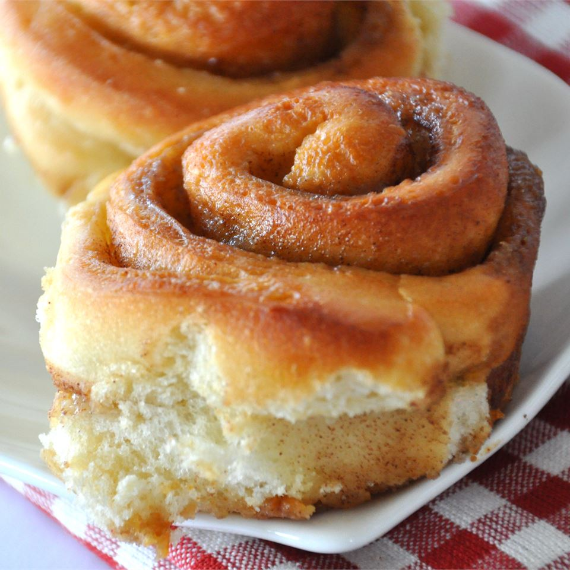

Buttermilk Cinnamon Rolls

Description
Easy, yeasted cinnamon rolls. A crowd always gathers when they come out of the oven. Favorite activity: scraping the goo off the bottom of the pan.
Ingredients
- 2 (.25 ounce) packages active dry yeast
- ¼ cup warm water (110 degrees F/45 degrees C)
- 1 ½ cups buttermilk
- ½ cup vegetable oil
- 4 ½ cups all-purpose flour
- 1 teaspoon salt
- ½ teaspoon baking soda
- ½ cup butter, melted
- 1 ¼ cups brown sugar
- 1 ½ teaspoons ground cinnamon
Steps
- In a large bowl, dissolve yeast in warm water. Let stand until creamy, about 10 minutes. In a small saucepan, heat the buttermilk until warm to the touch.
- Pour the buttermilk and oil into the yeast mixture; mix well. Combine the flour, salt and baking soda. Stir the flour mixture into the liquid 1 cup at a time, until a soft dough forms. Turn dough out onto a lightly floured surface and knead 20 times. Cover and let rest for 15 minutes. In a small bowl, stir together the butter, brown sugar and cinnamon.
- On a lightly floured surface, roll dough out into a large rectangle. Spread the brown sugar and butter mixture over the dough, roll up into a log and pinch the seam to seal. Slice into 1 inch pieces and place cut side up in a lightly greased 10x15 baking pan. Cover and let rise 30 minutes or cover and refrigerate overnight. If baking immediately, preheat oven to 400 degrees F (200 degrees C).
- Bake in preheated oven for 20 to 25 minutes, until golden brown. Let stand for 2 to 3 minutes before serving.